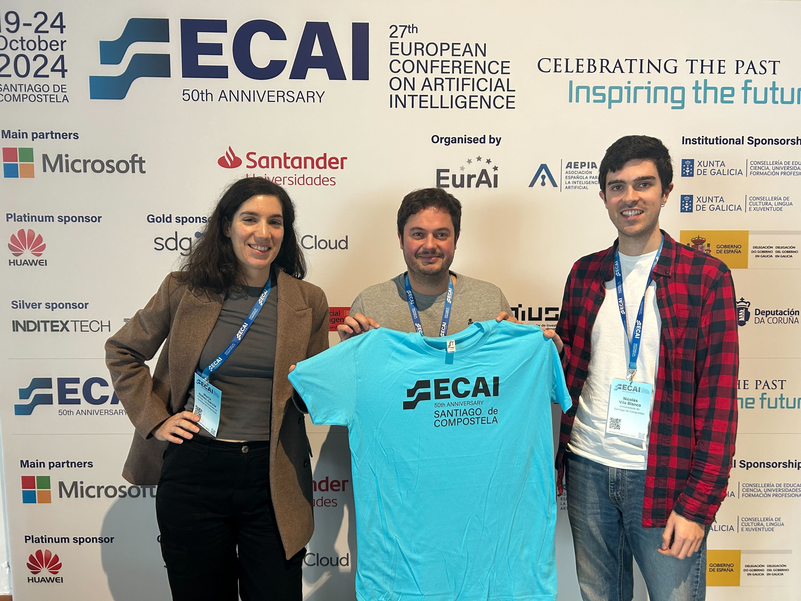
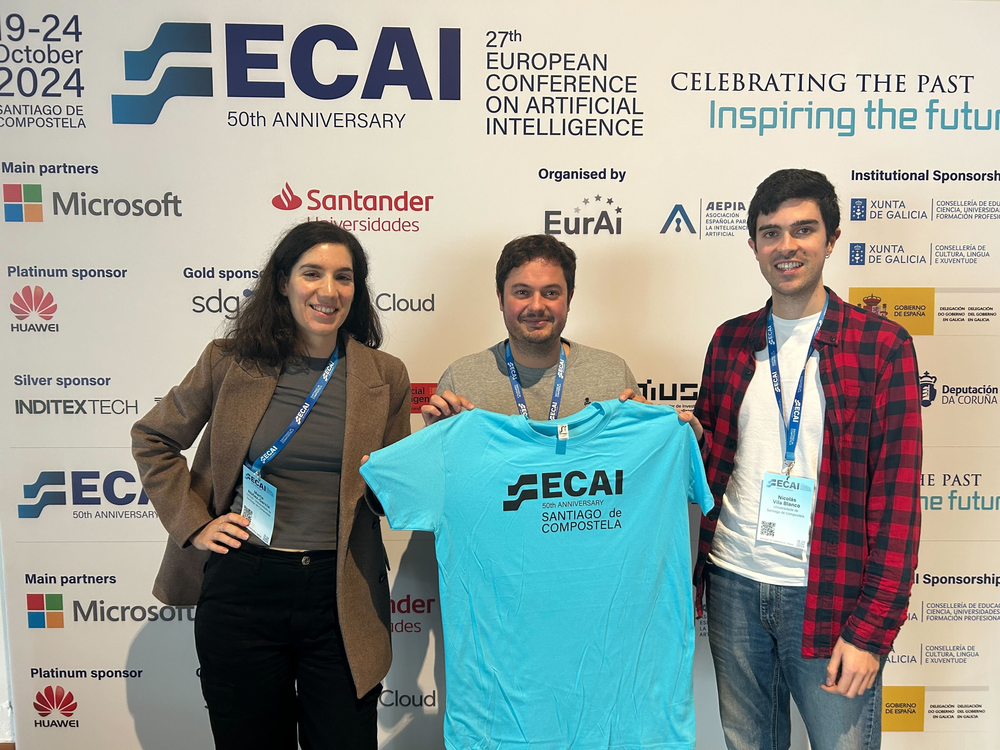

Copyright 2019 Reflux Design
Los profesores de unviersidad también
somos investigadores - 2024
Esta etapa podría considerarse como mi primera experiencia como profesor en la universidad, desde que, en septiembre de 2023, volví a mi ciudad, Santiago de Compostela, y a su homónima y antigua universidad, para incorporarme como Profesor Ayudante Doctor (Assistant Professor en el modelo anglosajón). Desde entonces, me he visto envuelto, más veces de las que me gustaría, en una conversación que no me resulta especialmente agradable. En ella, una persona, a la que llamaremos X, me pregunta a qué me dedico, y yo le respondo que soy profesor en la universidad. Automáticamente, el 50 % de las personas X responde: "¡Ah! Cojonudo, entonces tienes tres meses de vacaciones". El otro 50 % suele decir algo como: "Y si no estás dando clase, ¿qué es lo que haces?". Comienzo esta serie de blogs anuales principalmente para mi, no sé si alguién llegará a leer esto, pero sobre todo con el fin de recordarme todo lo que hago a nivel de investigación
Eventos/Viajes
Empezamos en Febrero de 2024, con mi primera visita a Dagstuhl en Alemania, donde fuí parte del comité organizador del seminario "Are Knowledge Graphs Ready for the Real World? Challenges and Perspective". Unos 50 investigadores de todo el mundo nos juntamos durante una semana entera, organizados en grupos de trabajo, el objetivo principal es definir los desafíos de nuestro campo de estudio para los próximos años. El report se puede leer aquí

La verdad es que, desde la vuelta de Dagstuhl hasta el ya tradicional viaje a Creta para ESWC, el primer año de clases y el cierre del proyecto PPDS me absorbieron por completo, complicando el trabajo de investigación. Aun así, gracias a la colaboración con muchas personas que me rodean, logré llegar a la Extended Semantic Web Conference 2024 con un artículo en la conferencia principal (junto a Xuemin Duan y Anastasia Dimou del DTAI-KULeuven, Bélgica). Por fin había conseguido publicar en la main track, presentando SCOOP, una herramienta capaz de extraer y combinar restricciones de datos para KGs. Además, la colaboración con Romana Pernisch y Lise Stork de la VU Amsterdam, junto con Maria Poveda de la UPM y Diego Conde, estudiante de doctorado de la misma universidad del que co-dirijo su tesis, comienza a dar sus frutos, y presentamos una versión preliminar de una metodología para la construcción de grafos de conocimiento en formato póster (LOT4KG). También participé en dos demos: RMLDoc y SCOOP-UI (una extensión del artículo en la conferencia principal). Sin embargo, lo que más sigo disfrutando de esta conferencia es la celebración de nuestro taller, el de nuestra comunidad: el Knowledge Graph Construction Workshop. En su quinta edición, invertimos un gran esfuerzo y muchas horas para atraer buenos artículos, presentaciones y demos, además de organizar la segunda edición del challenge en KGC. Si queréis saber más, os invito a leer el post que dejé en LinkedIn.
En julio, realicé una visita al Scientific Data Management Group en Hannover (Alemania), invitado por su coordinadora, Maria-Esther Vidal. Tuve la oportunidad de ofrecer una charla a los miembros del grupo sobre los desafíos asociados a la evolución de los grafos de conocimiento y su gestión en grandes proyectos, como el PPDS. Fue una semana muy enriquecedora, durante la cual también profundicé en enfoques híbridos que combinan KGs, LLMs y embeddings para grafos de conocimiento con el objetivo de abordar tareas especialmente complejas en el dominio médico. A nivel personal, fue un regreso emotivo, cinco años después de haber realizado allí la estancia de doctorado que transformó mi visión sobre lo que significa investigar.


Quizás esta parte llegue un poco tarde en el resumen del año, pero, cronológicamente, en octubre celebramos en Santiago el European Congress of Artificial Intelligence (ECAI), que reunió a más de 1,500 asistentes de todo el mundo. Junto con Nicolas Vila y Marta Núñez, me encargué de coordinar el equipo de voluntariado, compuesto por casi 60 personas. Las semanas previas de preparación fueron intensas y los seis días de congreso resultaron directamente frenéticos. Además, tuve la oportunidad de impartir un tutorial sobre construcción de grafos de conocimiento junto con mi colega Ana Iglesias, de la UPM, al que asistieron más de 20 participantes.
 

Finalmente, llegó el que suele ser el evento más importante, académicamente hablando, para quienes formamos parte de la comunidad de la Web Semántica: el International Semantic Web Conference (ISWC). Aunque este año no viajé a Baltimore, nos habían aceptado un artículo en la conferencia principal, junto con Dylan Van Assche y Anastasia Dimou. Presentábamos KROWN, un nuevo benchmark para la materialización de grafos en RDF, que incluye diferentes escenarios y configuraciones. Este benchmark había sido utilizado en los Knowledge Graph Construction challenges de 2023 y 2024. Para nuestra sorpresa, el artículo fue nominado al premio al mejor artículo en el track de recursos. Finalmente, y por segundo año consecutivo (algo que ya nos había sucedido con el artículo de RML Ontology en 2023, en la misma conferencia), el premio se lo llevó otro trabajo. Además también co-organizé el workshop Software Lifecycle Management for Knowledge Graphs, que surgió de las discusiones que tuvimos en Dagstuhl a principios de año.

W3C Community Group - KG Construction
Aunque parece el cuento de nunca acabar, el quinto año de trabajo en la comunidad de grafos de conocimiento ha tenido un gran impacto. Se realizó un gran esfuerzo a principio de año en la implementación de los acuerdos llegados en Diciembre de 2023 durante la reunión anual, que organizé en Santiago de Compostela. Principalmente se desarrollaron los test cases de todas las especificaciones, que luego se utilizaron en el track de conformance del challenge. En la segunda parte del año los esfuerzos se centraron en limar algunos aspectos que aún quedaban sueltos de las especificaciones más maduras (CC, FNML, Star o I/O) y el desarrollo de las RML-Views. Cerramos el año con nuestra reunión anual en Gante.


Misceláneao
Por fin nos aceptaron dos artículos de revista en el Semantic Web Journal. El primero centrado en la extensión de Morph-KGC para generar grafos RDF-star, y el segundo presentaba un conjunto de nuevas optimizaciones que se implementaron en el SDM-RDFizer. A día de hoy, los dos siguen en Pre-Press... Además co-edito el número especial sobre construcción de grafos de conocimiento en la misma revista, donde hemos recibido unos 15 artículos para revisar.
Me hizo muy feliz que dos personas con las que he tenido el gusto de colaborar durante muchos años defendieran sus tesis doctorales este año. Ana Iglesias, bajo la supervisión de Oscar Corcho, presentó su tesis en la UPM el 6 de noviembre, obteniendo la calificación de sobresaliente. Por su parte, Dylan Van Assche, supervisado por Pieter Colpaert y Anastasia Dimou, realizó su defensa privada el 9 de octubre y su defensa pública el 29 de noviembre en la Universidad de Gante. Tuve el honor de formar parte del tribunal en estas últimas.


Ya casi a finales de 2024, hemos comenzado en el CiTIUS un proyecto con Naevia Medical, una empresa que desarrolla un producto de ayuda a la decisión para profesionales de la medicina. En esta primera fase piloto, que durará todo 2025, vamos a construir un grafo de conocimiento y con la ayuda de grandes modelos de lenguaje, intentaremos mejorar muchas de las tareas de procesamiento de languaje natural que, a día de hoy, tienen que realizar de forma manual. Estoy seguro que saldrán investigaciones muy interesantes de este proyecto.
Para 2025, ¿cuáles son los objetivos?
Los objetivos o deseos para este 2025 son bastante continuistas, aunque alguno hay de apertura hacia nuevos horizontes con la idea de ampliar la aplicación de los KGs en otros campos que no sean puramente data management: